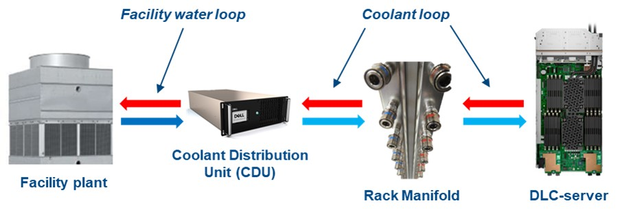
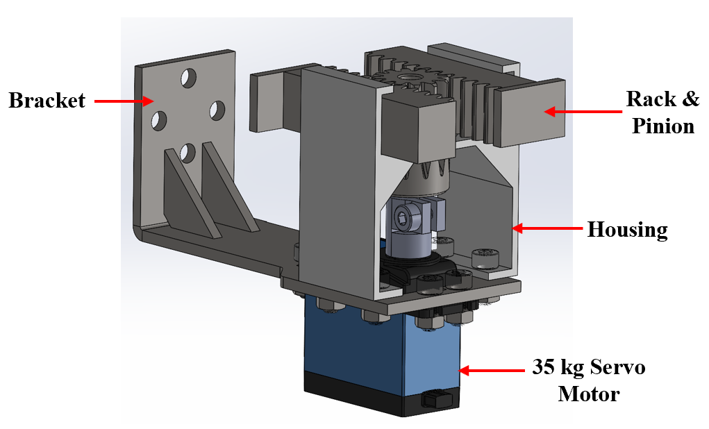
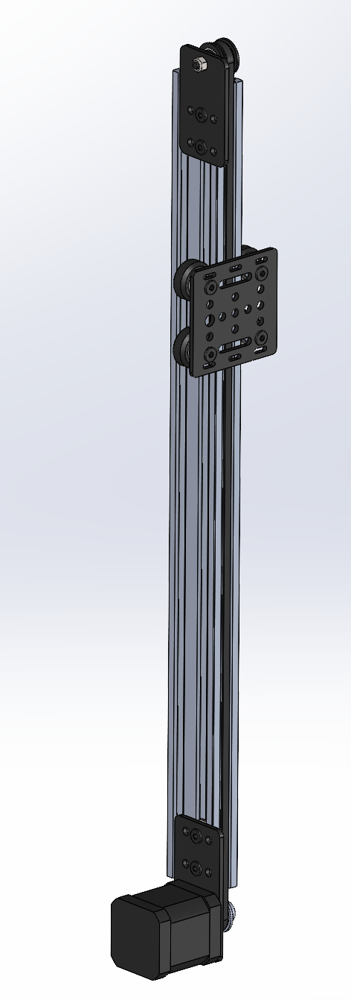
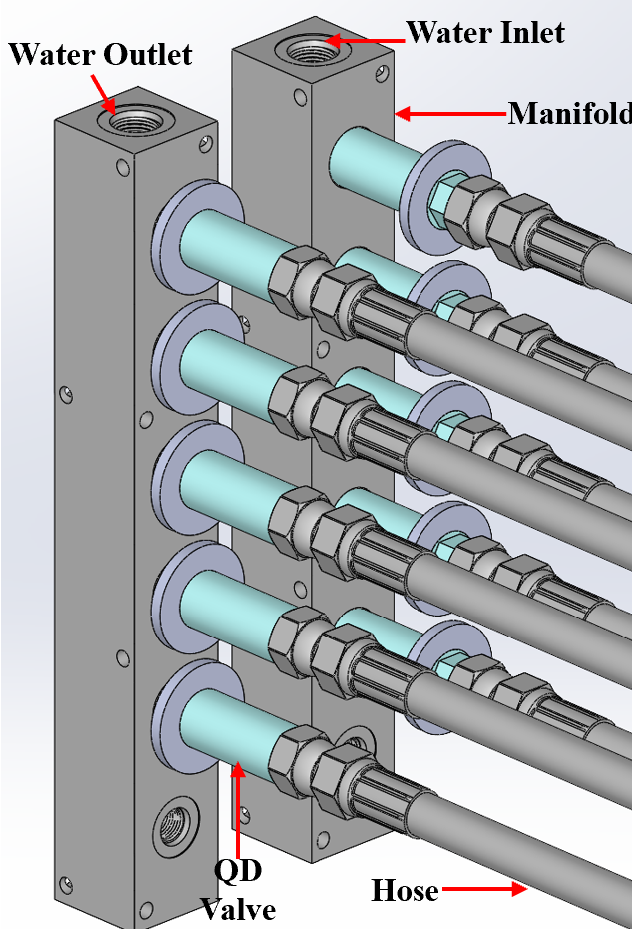
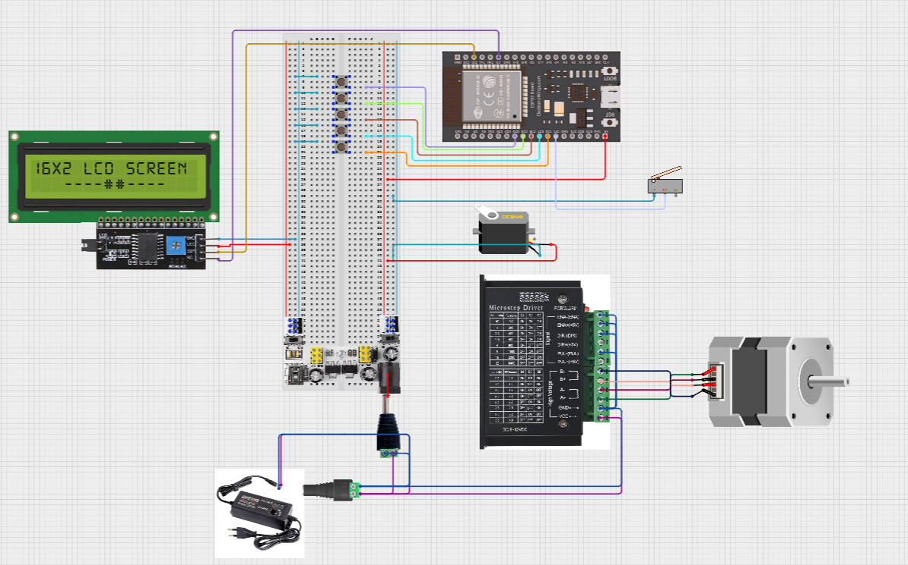
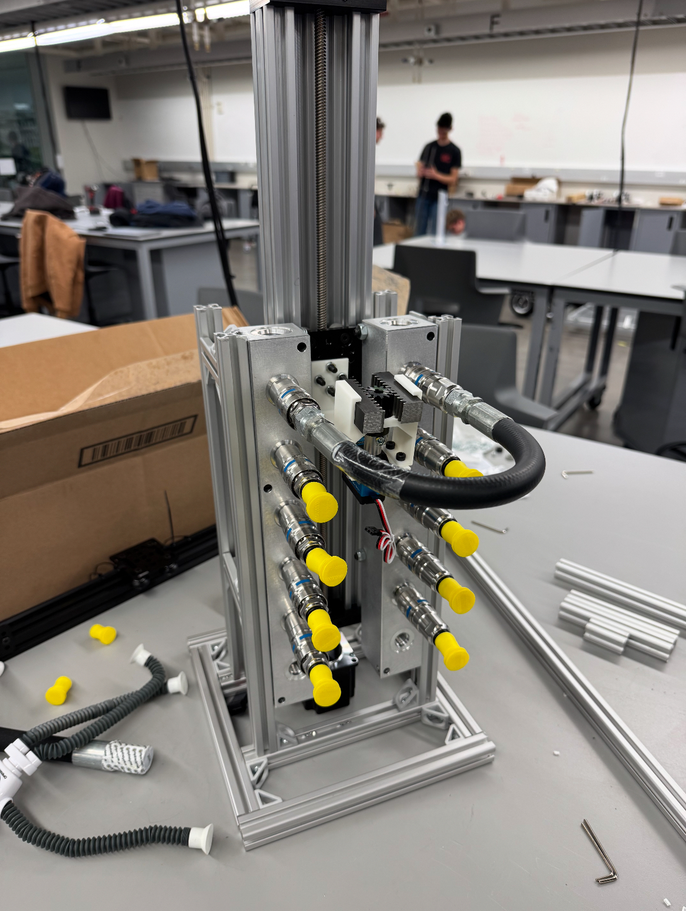
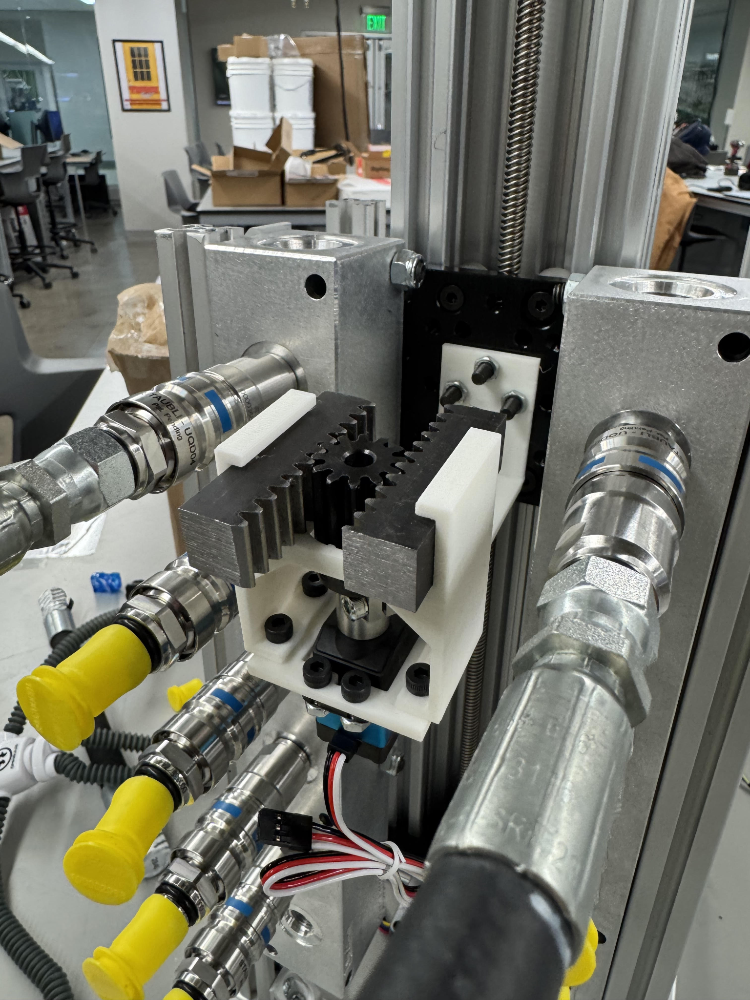
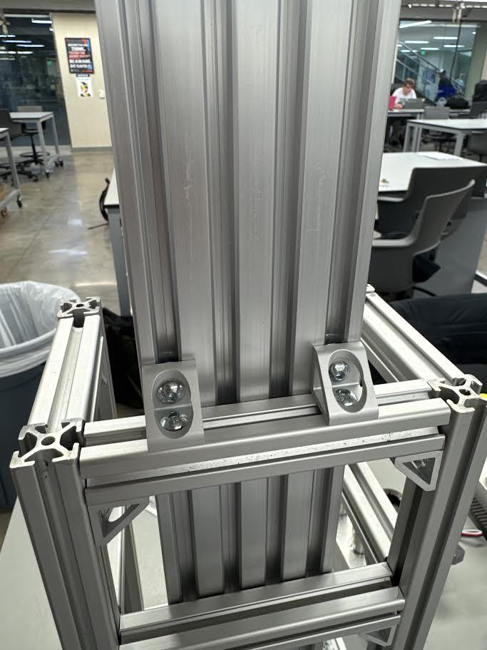

AI workloads pushed Dell’s thermal envelope past what air cooling could handle. Direct Liquid Cooling (DLC) replaced the fans with a closed loop—cold plates on every CPU and GPU, manifolds running coolant from a CDU into each rack, and a few hundred quick-disconnect (QD) fittings holding it all together.
Coolant is the new failure surface. One weeping fitting can drip onto a power supply two rack-units below and take an entire aisle offline. Dell’s existing leak-detection layer sees this fast—but the only response it has is a full-rack shutdown. A blunt tool for what is usually a node-level problem.
The cost of a single 42U rack going dark is roughly $80,000 every four hours, or about $480,000 per day—not counting the GPUs themselves, the SLA penalties, or the customer phone calls. Insurance covers the hardware. It does not cover the schedule.

▪ Solution-neutral problem statement, agreed with sponsor, Sept 2024
The mechanism doesn't detect leaks—Dell's sensors already do that. It receives the leak-level signal, drives an actuator up the rack to that level, and physically pulls apart the two QDs feeding that server. Coolant flow to the leaking node stops. Coolant flow to every other node continues. The data center never sees an aisle drop.
It splits cleanly into four modules, each independently testable, each replaceable without taking the others apart.
Everything sits inside an 8020 aluminum frame built to the dimensions of a Dell rack column. We didn't build a full 42U-tall prototype; we built a five-level test stand that exercises every motion the production version would.
Servo-driven rack-and-pinion in a 3D-printed housing. Translates rotary motion into two opposing linear pulls, one rack each, disconnecting both supply and return QDs in a single stroke.
35 kg·cm servo · 3.4 N·m outputLead-screw vertical stage carrying the actuator. Self-locking under load, zeroes itself against a limit switch on power-on, and lands within 6 mm of the target QD center across all rack levels.
Stepper-driven · ±6 mm toleranceClosed-loop test rig that mimics a real rack manifold. Two manifolds (intake / outlet), five levels, rigid tubing through QDs. Flow meter on the intake confirms isolation when the actuator pulls a level.
5 levels · pump · flow meterESP32 running a deterministic state machine. Limit-switch homing, preset positions per rack level, manual override, and an LCD that shows what the system is doing. No cloud round-trip—loss of network does not stop isolation.
ESP32 · stepper driver · servo PWM
The first concept used two separate solenoids, one for each QD. Two solenoids meant two driver circuits, two timing windows, two failure modes, and twice the housing volume. After the first sketch I scrapped it.
The version we shipped uses a single pinion driving two racks moving in opposite directions, one for the supply line, one for the return. One actuator stroke disconnects both QDs simultaneously. Half the parts, half the failure surface, a quarter of the wiring.
Force calc said we needed 1.25 N·m to pop a QD. I specified a 35 kg·cm hobby servo (3.4 N·m output) for the safety margin—~3× the load. After 50 consecutive cycles the gear teeth showed no measurable wear.
The housing is the most complex part on the build. It carries gear loads, holds the racks parallel, locates the servo, and clears the QD shafts. It’s a strong injection-molding candidate at scale. For the prototype I printed it in PETG at 80% infill, 6 mm walls—up from 50% / 2 mm after the first FEA pass showed too much deflection.

I trade-studied a belt-and-sprocket elevator first. Faster, cheaper bearings, but it needed a brake to hold position under the actuator’s reaction loads. That’s another failure mode living above expensive hardware.
A lead screw is self-locking—cut the power and the carriage stays where it is. It’s slower per revolution, but the actuation cycle is dominated by the QD pull, not the climb. Net cycle time still hit 10.2 s, well inside the 15 s spec.
The carriage zeros itself against a limit switch at the bottom of travel every time it powers on. Without that, stepper drift compounds and the actuator starts hunting for QDs. With it, the system landed within 6 mm of every target level across 50 consecutive runs.

Stock Dell QDs are too narrow to grab with anything mechanical. Our first plan was to weld washers onto each one to give the actuator a flat face to push against. The Fisher Engineering Design Center stopped us cold: welding heat damages the internal ball bearing that holds the QD’s seal.
I redesigned around off-the-shelf shaft collars sized to slip over each QD body. They give the actuator the surface area it needs, they’re field-replaceable, and they don’t void the QD spec sheet. This is one of the items we flagged for Dell as a future-state design change: integrate the collar geometry directly into the next-gen QD body.
The closed loop runs water through both manifolds via rigid tubing. A flow meter on the intake confirms isolation: pull a level’s QDs, watch the rate drop. Five levels, one pump, one shut-off valve, one bucket reservoir. Crude, but it answers the only question that matters: did we stop the flow.

The control loop is intentionally boring. ESP32, stepper driver, servo PWM line, limit switch, four buttons, 16×2 LCD, 24 V brick. On boot, it homes the elevator. On a level command, it drives to the preset, fires the servo, watches a feedback line, and reports. The state machine fits on one whiteboard.
The brief allowed for a network-connected version. I argued—and the team agreed—against it for the prototype. If a leak event coincides with a network blip, you do not want the isolation system waiting on a TCP retry. Each rack runs its own loop. The dashboard integration is a wire we left for Dell to terminate on their side.



Manufacturing kept us honest. Three things we got wrong on the first pass: the cantilever beam deflected too much at the actuator end and we re-cut it from a thicker waterjet stock, the welded-collar plan died at the FEDC and turned into the shaft-collar redesign, and the business office lost a $300 purchase order for a week, which is its own kind of engineering problem.
We ran 50 consecutive dry cycles at randomized levels with no failures. We then ran the same routine with water in the loop. Flow rate measurably dropped at every disconnect; nothing leaked. The acceptance test was not subtle: a bucket on the floor stayed empty.
Faster, cheaper bearings. Needs a brake to hold position. Brake is one more thing to fail above expensive hardware.
Self-locking by geometry. Slower per turn, but cycle time is dominated by the QD pull, not the climb. Net response: 10.2 s.
One per QD. Two driver circuits, two timing windows, two housings, twice the wiring. Simpler to imagine, harder to build right.
One pinion, one motor, one stroke disconnects both QDs. Half the parts, half the failure modes.
Gives the actuator a flat face to push against. Welding heat damages the QD’s internal ball bearing. Caught at FEDC review.
Field-replaceable, no thermal damage to the QD body. Flagged for Dell as a future-state QD geometry change.
Dashboard integration, telemetry, OTA updates. Couples isolation to network availability—exactly what you don’t want during a fault.
Each rack runs its own deterministic loop. Network drop doesn’t suspend isolation. Telemetry left as an integration point for Dell.
Total project spend was $3,249. McMaster and Amazon carried most of the hardware; OpenBuilds supplied the elevator stage; FEDC labor covered waterjet cuts and welding. The overage on our $3,000 budget was a last-minute trip to Round Rock to deliver the prototype to Dell.
If Dell were to deploy this—leveraging their supply chain—the per-unit cost for the critical hardware drops to $406.60. That excludes the controls integration into Dell’s existing rack dashboard, which is where the meaningful integration cost lives. Set against $480 K of avoided downtime per rack-day, the system pays for itself the first time it fires.
The two-rack / one-pinion consolidation already pulled significant part count out of the design. The cantilever beam is one waterjet cut and a single bend, with welds we could eliminate at thicker stock. The 3D-printed housing is the bottleneck: it’s the most geometrically complex part and it’s the right candidate for an injection mold once volume justifies the tooling.
The lead-screw elevator came from OpenBuilds as an off-the-shelf assembly. Cheap and reliable, but it has a lot of small parts and resists automation. A future redesign would consolidate the carriage into a single machined plate with captive bearings.
Standardized fasteners across the build (M4 / M5 throughout). Most interfaces are obvious; the rack mounts to a cabinet with four bolts. Two known assembly pain points flagged for the next revision: the cantilever-to-elevator joint is fiddly, and the servo mount needs an asymmetric keying feature so it can’t be installed backwards.
After the Engineering Project Showcase, we drove the prototype to Dell’s Round Rock headquarters and walked through every subsystem with their thermal-systems and patent teams. The prototype is now Dell property; what they do with it next is their call.
The core idea—vertical-travel actuator that disconnects fluid lines on demand—isn’t specific to data centers. It applies anywhere QDs are common: HVAC plant rooms, automotive assembly lines, aerospace fuel-line testing, dialysis and other medical fluidic equipment. The patent embodiments cover that surface area deliberately.
It removes the human from the critical 4-hour window. A leak no longer means “page someone, drive in, find the right rack, find the right level, kill the loop manually.” The system isolates the node, surfaces the affected level, and waits for an acknowledgment. The technician still fixes the QD—they just don’t have to race the dripping coolant to do it.
Dell’s legal team identified the node-level isolation solution as IP worth protecting. We submitted documentation, met with their patent counsel, and the application is filed.
The patent covers the combination of a vertical-travel module and a QD actuation module, with multiple embodiments for each.
Five mechanical engineering seniors. I was the primary designer and team lead. I owned the mechanical concept end-to-end: the rack-and-pinion actuator, the housing geometry, the cantilever-beam interface, the FEA validation, and the integration of the four modules into a single frame.
I also took on the project-management surface: sponsor cadence with Dell’s thermal team, the IP submission process, the Gantt chart, and the schedule recovery when the business office lost a purchase order. Danny, Juan, Wilson, and Noah built the elevator integration, the controls, the water loop, and the validation harness, respectively. The prototype is theirs as much as it is mine.
Acknowledgements. Eric Tunks and Ben Sy at Dell, who treated us like junior engineers, not students. Dr. Jacob McFarland and Dr. Dorrin Jarrahbashi at Texas A&M for the technical critique. The Fisher Engineering Design Center for the waterjet time and for stopping us from welding through a $40 part.